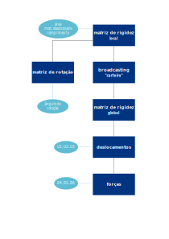

Implementacao tp
Introdução
Antes de se programar, necessariamente, deve-se primeiro pensar no algoritmo que será implementado. Um algoritmo pode ser definido como uma sequência bem definida de ações não ambíguas que deve ser executada em um intervalo de tempo finito e com um quantidade de esforço finita. Fica claro, então, que um algoritmo independente de seu ambiente implementação, uma vez que a sequência a ser executada é a mesma. Dessa forma, definir-se-á o algoritmo pela forma de um fluxograma, com snippets de código para cada parte do algoritmo. A linguagem utilizada aqui será a Python, pela sua facilidade de utilização e disponibilidade de bibliotecas.
| import sympy as sp
import numpy as np
|
depois
| L = sp.Symbol('L')
x1 = -L/2
x2 = L/2
u1 = sp.Symbol('u1')
u2 = sp.Symbol('u2')
|
O Algoritmo
A imagem a seguir demonstra por meio de um fluxograma o algoritmo a ser implantado. Observa-se que as caixas azul-marinho representarão as funções componentes do código; Faz-se importante programá-las dessa maneira uma vez que a utilização de funções permite a sua reutilização em códigos posteriores, evitando o retrabalho, já as setas pretas representam o sentido pelo qual o programa deverá ser corrido pelo interpretador Python. As setas em azul claro representam dados de input, quando a seta aponta em direção da caixa de função; e output quando a seta aponta na direção oposta. Cada item em azul claro representa o item que o programador deverá fornecer ao código, no input e cada item que o código retorna, no output.

Funções
A seguir, serão apresentadas algumas sugestões de como se programar cada função no Python. As bibliotecas Numpy e Math serão utilizadas.
Matriz de Rotação
A matriz de rotação rotaciona um segmento de reta à um ângulo theta medido a partir do eixo x positivo e o retorna em coordenadas x e y.
1
2
3
4
5
6
7
8
9
10
11
12
13
14
15
16
17 | def rotation_matrix(theta):
"""Rotation Matrix.
Outputs, in matricial form, the coordinates for a line
segment defined by X and Y coordinates. The input is
made in degrees, measured counter-clockwise from the
positive X axis."""
theta = mt.radians(theta)
c = mt.cos(theta)
s = mt.sin(theta)
rotmat = np.matrix([[c, -s, 0., 0.],
[s, c, 0., 0.],
[ 0., 0., c, -s],
[0., 0., s, c]])
return rotmat
|
Matriz de Rigidez Local
A matriz de rigidez local cria a matriz de rigidez local do elemento, em coordenadas globais.
1
2
3
4
5
6
7
8
9
10
11
12
13
14
15
16
17
18
19 | def local_stiffness_matrix(Young_Modulus=1., Length=1.,
Area=1., Rot_Ang=0.0):
"""Local Stiffness Matrix Constructor (in Global Coordinates).
Outputs, in matricial form, the local stiffness matrix for
a given truss element. The """
rotmat = rotation_matrix(Rot_Ang)
rotmat_trans = rotmat.transpose()
k_matrix = np.matrix([[1., 0., -1., 0.],
[0., 0., 0., 0.],
[-1., 0., 1., 0.],
[0., 0., 0., 0.]])
local_stiff = rotmat*(Young_Modulus*Area/Length)*k_matrix*rotmat_trans
return local_stiff
|
Matriz de Ridigez Global
A Matriz de rigidez global faz o endereçamento das matrizes de rigidez locais de cada elemento, criando assim a matriz de rigidez global.
1
2
3
4
5
6
7
8
9
10
11
12
13
14
15
16
17
18
19
20
21
22
23
24
25
26
27
28
29
30
31
32
33
34
35
36
37
38
39
40
41
42
43
44
45 | def global_stiffness_matrix():
"""Global Stiffness Matrix.
Outputs, in matricial form, the global stiffness for the truss
being analysed. The global nodes assingment to the local nodes
contained in each element has to be made manually."""
#Elements from the problem:
element1 = local_stiffness_matrix(Young_Modulus=200000.,
Length=1000*mt.sqrt(2.),
Area=10030.05,
Rot_Ang=135.0)
element2 = local_stiffness_matrix(Young_Modulus=69000.,
Length=1000.,
Area=10030.05,
Rot_Ang=90.0)
element3 = local_stiffness_matrix(Young_Modulus=69000.,
Length=1000.,
Area=10030.05,
Rot_Ang=0.)
#Creating a blank Global Stiffness Matrix
global_stiff = np.matrix(np.zeros([6,6], dtype = float))
#Broadcasting element 1 into Global Stiffness Matrix:
broadcast1 = [0, 1, 3, 2]
for i in range(0,4):
for j in range(0,4):
global_stiff[broadcast1[i],broadcast1[j]] += element1[i,j]
#Broadcasting element 2 into Global Stiffness Matrix:
broadcast2 = [4, 5, 3, 2]
for i in range(0,4):
for j in range(0,4):
global_stiff[broadcast2[i],broadcast2[j]] += element2[i,j]
#Broadcasting element 3 into Global Stiffness Matrix:
broadcast3 = [4, 5, 0, 1]
for i in range(0,4):
for j in range(0,4):
global_stiff[broadcast3[i],broadcast3[j]] += element3[i,j]
return global_stiff
|
"Solucionador" de Deslocamentos
Resolve a matriz de rigidez global, achando os deslocamentos desconhecidos.
| def displacements_solver(g_matrix, f):
"""Displacements Solver.
Outputs an array with the unknown displacements for the
problem. The input is made with the prescribed forces and
the Global Stiffness Matrix."""
displacements = np.linalg.solve(g_matrix[0:3, 0:3], f)
return displacements)
|
"Solucionador" de Forças
Encontra as forças desconhecidas do problema, utilizando-se os deslocamentos procurados no solver de deslocamentos.
1
2
3
4
5
6
7
8
9
10
11
12
13
14 | def forces_solver(g_matrix, u):
"""Displacements Solver.
Outputs an array with the unknown reaction forces for the
problem. The input is made with the displacements found in the
Displacements Solver function and the Global Stiffness Matrix."""
forces = [0, 0, 0]
cut_matrix = global_matrix[3:,:3]
for i in range(0,3):
for j in range(0,3):
forces[i] += cut_matrix[i,j]*u[j]
return forces
|
Agora, com as funções apresentadas acima tente resolver o problema da treliça via código.